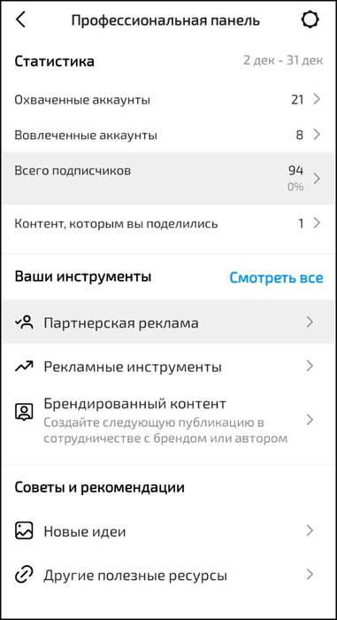
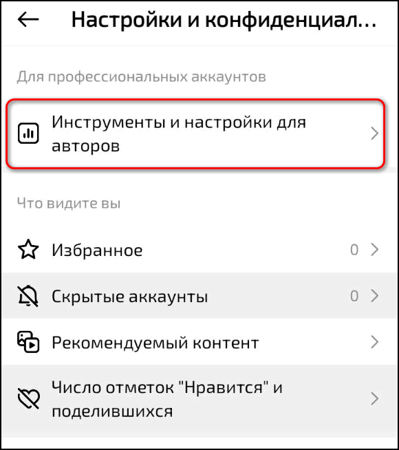
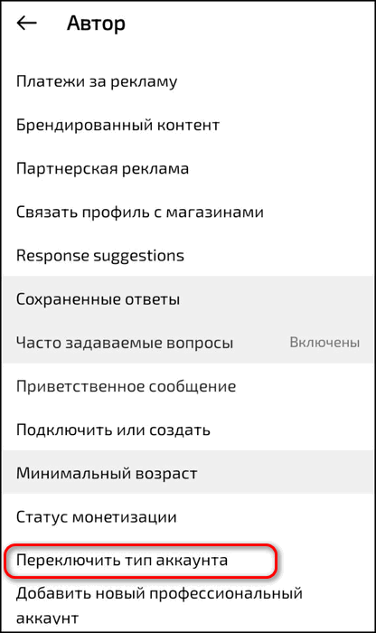
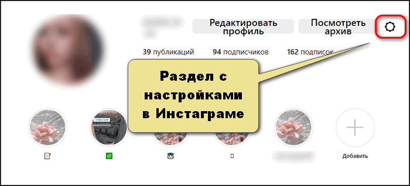
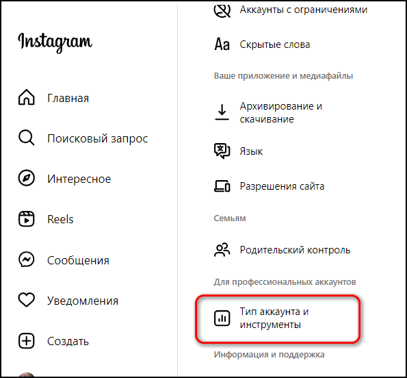

Как обратно переключиться на личный аккаунт в Инстаграм

Личный профиль – это стандартный статус аккаунта в Инстаграме*. У него нет привилегий в виде статистики, рекламных кампаний, зато его можно закрыть от назойливых посетителей. Переключиться на личный аккаунт в Инстаграме* пользователь сможет после того, как ранее подключал бизнес или «Автор».
Особенности личного профиля в Инстаграме*
Статус «Личный» появляется сразу после регистрации в социальной сети. В дальнейшем, исходя из целей пользователя, тот может переключиться на «Бизнес» или «Автор». Обычно, личный аккаунт подключают, если пользователь не желает дополнительного внимания, продвигать профиль для продаж или блога. Такой тип можно перевести в «Закрытый» и принимать заявки на подписку только от друзей, они же и будут единственными зрителями.
Статистика и авторство
У личного профиля нет статистики, которая необходима для «Бизнеса» и «Авторов». Поэтому, перед попыткой перейти на личный, нужно проанализировать свою аудиторию и сохранить рекламные данные.

Если из профессионального аккаунта сделать обычный, то также пропадает категория. Но владелец страницы может указать её в описании. Основные отличия личного профиля:- нет категории и инструментов для продвижения;
- отсутствует статистика. Только раздел «Зрители» в Сторис, который показывает пользователей, просмотревших запись;
- можно перевести в статус «Закрытый» без уведомлений и проблем.
Проще говоря, личный профиль нужен тем, кто планирует размещать на странице только свои фото, снимки друзей и семьи.
Переключиться через Android
С мобильного приложения управлять профессиональным аккаунтом проще. Там же, пользователь сможет переключиться на личный или выбрать статус «Бизнес». Сделать из аккаунта «Автора» личный:
- Зайти в Инстаграм* - Настройки и конфиденциальность.

- Профессиональный аккаунт – Инструменты для авторов.

- Тип профиля – Перейти на личный.
Прежде чем выйти из профессионального аккаунта появится уведомление, которое предупреждает об отключении статистики и рекламных объявлений. Если у владельца в текущий момент запущено продвижение – его нужно остановить.
Перейти на компьютерной версии
Вернуть личный аккаунт с компьютерной версии также просто, как и на телефоне. Из бизнес аккаунта сделать личный в Инстаграме*:
- Зайти в социальную сеть через компьютер.
- Авторизоваться – нажать по значку в виде шестеренки.

- Настройки и конфиденциальность – Инструменты и настройки для авторов.

- Переключиться на личный – Подтвердить выбор.
После этого статус страницы будет переключен и пользователь сможет закрыть аккаунт от посторонних.
В последних обновлениях были изменения: появились дополнительные категории. Поэтому раздел с инструментами для авторов вынесен отдельно и включает все функции, которые могут понадобиться для создания креативного контента, монетизации.
Что лучше: бизнес или личный аккаунт
Перед тем как вернуть личный аккаунт в Инстаграме*, пользователю нужно взвесить все положительные и отрицательные стороны такого решения. Например, бизнес-аккаунт удобен тем, что можно отследить любых посетителей: в аналитике указано, сколько лет целевой аудитории, половая принадлежность и города. Бизнес статус не обязывает пользователя создавать рекламные кампании и объявления. От него можно отказаться, как только владельца перестанут интересовать расширенные функции. У личного преимущество в том, что его легко перевести в статус «Закрытый». Эта категория профилей предполагает, что посещать страницу будут только родственники и друзья, и разрешенные владельцем подписчики.
Нужен ли Facebook*, чтобы переключиться
Фейсбук* может пригодиться, чтобы сделать аккаунт личным, в том случае если страница изначально была к нему привязана. С помощью раздела «Настройки и конфиденциальность» можно перейти в «Центр аккаунтов» и узнать какая учетная запись была связана с Инстаграмом*. Отключить Facebook* прежде чем перевести аккаунт в статус «Личный»:
- Зайти в Инстаграм* - Настройки и конфиденциальность.
- Центр аккаунтов – Аккаунты.
- Рядом с Facebook* нажать «Удалить».
Или же, удалить учетную запись в Фейсбуке*, если в ней нет необходимости. Пользователя предварительно спросят: уверен ли он в своем решении и в течение 30 следующих дней он сможет вернуть учетную запись. Если же в аккаунте была полезная информация – заказать архив по прикрепленному адресу электронной почты.